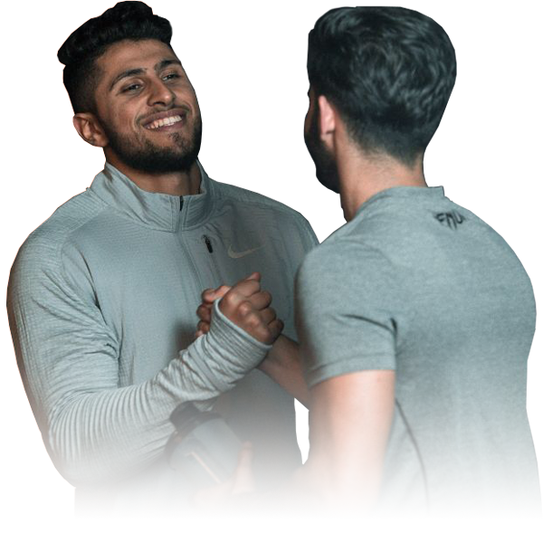
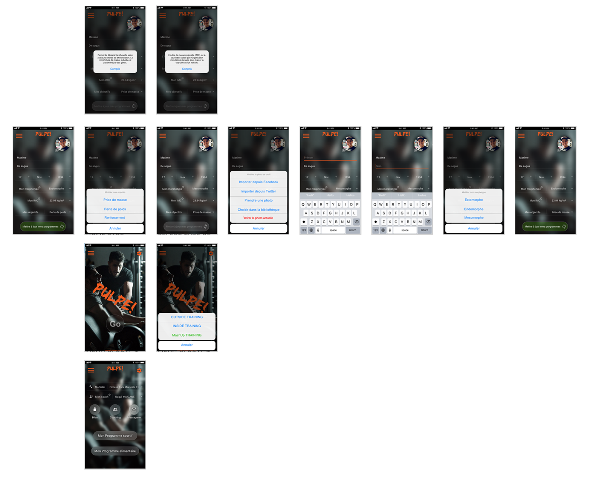

<div class="global animated fadeIn">
    <div class="center bg-dark">
      
      <h2> - Application web et mobile</h2> 
      
      <p>Pulpe! est un projet personnel, il est issue d'une collaboration étroite avec mon ancien coach sportif <a href="coachyougane.com">Nagui Yougane</a>
      pour lequel j'ai réalisé un site internet some toute basic en utilisant un CMS<span class="lower">*</span> (WordPress) pour la présentation de son activité, nous avions l'idée d'aller 
      au-delà d'un simple site internet.</p>

      <p>Afin de faciliter la gestion des élèves d'un coach sportif notamment la génération d'un programme alimentaire et sportif 
        personnalisé, le suivi mais également la gestion du calendrier des séances avec un coach, nous avons eu l'idée de créer une application web/mobile.<br>
        Cette application devra être accessible depuis un navigateur internet classique mais également depuis une application mobile, iOS<span class="lower">*</span> 
        et Android<span class="lower">**</span>.
      </p>
        
        <p>Pour répondre à ce besoin il m'a semblé pertinent d'utiliser le framework Ionic, il permet la création d'applications multiplateforme rapidement et facilement 
          en utilisant des technologies web (JavaScript, HTML, CSS). Il s'appuie sur différent framework JS tel que Angular, VueJS ou encore React pour la partie web et 
          sur Cordova pour la partie native.
        </p>

      <p>Ce choix s'appuie sur une donnée essentiel et non négligable c'est la possibilité de pouvoir faire un développement unique pour 
        différente plateforme avec des performances qui se rapprochent d'une application développé nativement par exemple, ce choix semble donc cohérent. 
      </p>

      <p>Pour préparer ce projet, j'ai effectué une consultation auprès de plusieurs coachs sportifs y compris les plus influent notamment pour ne citer 
        que lui le célèbre coach <a href="https://t-nice.com">T-Nice</a> exercant sur Miami auprès des grandes personnalités comme le rappeur 
        <a href="https://fr.wikipedia.org/wiki/Booba">Booba</a> par exemple.</p>
        
        <p>Cette consultation m'a permis d'unifier le besoin sur 3 axes essentiels :</p>
        <ul>
            <li><h5>Organisation :</h5><span class="italic">Une meilleure gestion calendaire des coaching mise à jour dynamiquement.</span></li>
            <li><h5>Suivi :</h5><span class="italic">Un suivi sans faille, avec la possibilité de communiquer avec son coach en temps réel.</span></li>
            <li><h5>Résultat :</h5><span class="italic">Des résultats en net amélioration vis à vis de la solution déjà existante.</span></li>
        </ul>
        <p>Pour avoir une idée un peu plus précise nous avons à partir de ces 3 axes réalisé un sondage auprès des différent(e)s élèves de quelques coachs résident au sein 
          des salles de sport de la franchise "Fitness Park" de la région PACA. 
        </p>
        <p>
            Vous trouverez <a target="_blank" rel="noopener noreferrer" href="https://docs.google.com/forms/d/e/1FAIpQLSfZcqP7R56zdsLpj8_FQ7mKmXKlrCJDb9cUnfHDYLsVNBtUZg/viewform?usp=sf_link">ici</a> le sondage Google Form utilisé.
        </p>

        
        <p class="exampleMock">
          Pour matérialiser nos idées il était essentiel de faire une maquette pour ce faire j'ai effectué une petite formation sur l'utilisation d'Adobe XD, 
          c'est un logiciel me permettant de fabriquer des maquettes en utilisant des kits d'interface utilisateur propriétaire (Apple, Google, etc..).</p>
          <p>La particularité d'Adobe XD, c'est la possibilité de rendre cette maquette vivante avec des intéractions, ceci m'a permis d'effectué un petit scénario 
          avec les différentes vues de l'application sur Mobile.</p>
        
        <p class="exampleMock">
          
          
          
        </p>
          
            
    </div>
  </div>
  